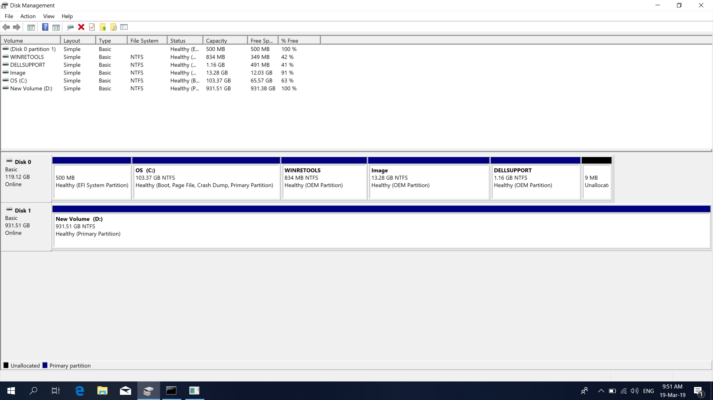
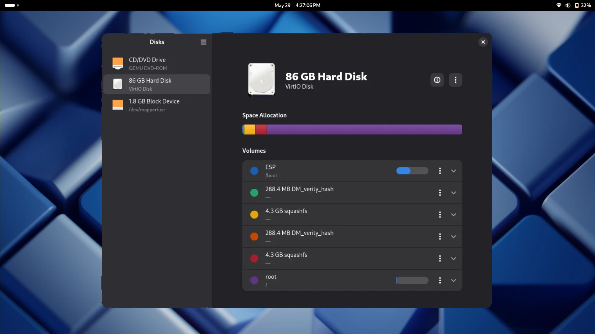

What are partitions/partitioning?
Partitions are essentially divisions of a physical storage drive, like a hard disk or a solid-state drive (SSD). Think of your hard drive as a filing cabinet; partitioning is the process of putting dividers in that cabinet to create separate drawers. Each drawer, or partition, can be treated as an independent storage space. This means you can have different file systems on each partition, and they can be used to hold separate operating systems, personal files, or backups. The process of dividing the disk into these sections is called partitioning. It is a fundamental concept for managing storage on a computer. For example, your Windows installation probably uses at least two partitions: one for the operating system and another for recovery data. Partitioning is necessary for installing any operating system and is particularly important for tasks like dual-booting.
Should I dualboot, and what should I know?
Dual-booting is the act of installing two or more operating systems on the same computer, each on its own partition. When you start your computer, you get to choose which operating system you want to load. This is a great option for people who want to try Linux without fully committing to it. It allows you to keep Windows for specific applications you can't run on Linux (like Adobe software or certain games) while you explore the new OS. However, dual-booting requires careful planning. You need to ensure you have enough free space on your hard drive to create a new partition for Linux, and you'll need to use a partitioning tool to set this up. While it's generally safe, it's a good idea to back up all your important data beforehand to prevent any loss. It's a great middle-ground for anyone who is unsure about making a full switch.
Partitioning through Windows
If you are currently on Windows, you can use the built-in Disk Management tool to prepare your drive for a Linux installation. To access this, simply search for "Create and format hard disk partitions" in the Start Menu. In this tool, you can see all your current partitions. You can then shrink your main Windows partition to free up some unallocated space. It's in this unallocated space that you will later install Linux. Make sure you leave enough space for your Linux distro and any files you plan to store there.
Partitioning through Linux
When you run the Linux installer from your live USB, it will give you options for how to handle partitioning. The installer will often have a "side-by-side" or "install alongside Windows" option that automates the partitioning process for you, making it a very simple and safe choice. Alternatively, you can choose the "Something else" or "Manual partitioning" option. This will bring up a partitioning tool that lets you manually create, resize, and format partitions. This is a more advanced option, and while it gives you more control, it should only be used if you know what you are doing.
Linux partition layouts (manual)
Information
Some older legacy BIOS systems require a 1MB BIOS BOOT partition at the start of the disk. I would recommend the GPT partition layout, as MBR doesnt allow as many partitions
Simple Partition Layout
This is a simple, yet practical partition layout. This should be the easiest partition layout to manage, and it should have relatively no maintainecne. I would recommended this for most users.
| Partition | Size | Description |
|---|---|---|
| 1 | 600MB-1GB | EFI Boot Partition |
| 2 | 4GB+ | Linux Swap (optional, read recommended swap below) |
| 3 | Remaining Space | Linux Root Partition |
Seperate Home Folder Layout
This is another relatively simple partition layout, but can be more flexible/secure in some cases. This partition layout is simple, but may require extra attention if the root partition is filled.
| Partition | Size | Description |
|---|---|---|
| 1 | 600MB-1GB | EFI Boot Partition |
| 2 | 4GB+ | Linux Swap (optional, read recommended swap below) |
| 3 | 35GB-100GB | Linux Root Partition |
| 4 | Remaining Space | Linux Home Partition |
How much swap should I have?
Red Hat recommends the following swap sizes for different RAM size. You can visit the cited Red Hat article below if you wish.
Determining Swap Size| RAM Size | Recommended Swap | + Hibernation support |
|---|---|---|
| Less than 2GB | 2X current RAM size | 3X current RAM size |
| 2GB - 8GB | Equal to the amount of RAM | 6X current RAM size |
| 8GB - 64GB | Atleast 4GB | 1.5X current RAM size |
| Over 64GB RAM | Atleast 4GB | Hibernation is not recommended |
Information
These layouts should work around other partitions. Feel free to dualboot Windows (or another OS), and add these partitions after the other partitions.